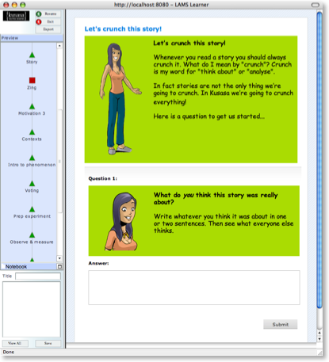

LAMS is an
Open Source system for designing, managing and
delivering collaborative elearning activities. It
provides teachers with a simple environment for creating
sequences of learning tasks. These activities can
include a range of individual tasks, small group work
and whole class activities based on both content and
collaboration.
Kusasa's lessons are built using LAMS. Once learners are logged in, an onscreen facilitator guides them through their lesson, which consists of a story, onscreen reading and interactive tasks, collaboration among learners, offline activities, an eToys challenge, and several opportunities for reflection.
To learn more about LAMS visit the LAMS Foundation Wiki.